Ситуационный центр
Центр организации Дорожного Движения
от 2 500 000 ₽ с НДС 22%Состав оборудования
Видеостена 3 х 3 · Видеоконтроллер · Система управления
Также входит в стоимость
Проектирование · Монтаж и пусконаладка
Осуществляем профессиональное мультимедийное оснащение диспетчерских центров под ключ — от типовых решений до индивидуальных уникальных решений для объектов стратегического значения.

Цены «от» и условия относятся к указанному составу.
Центр организации Дорожного Движения
от 2 500 000 ₽ с НДС 22%Состав оборудования
Видеостена 3 х 3 · Видеоконтроллер · Система управления
Также входит в стоимость
Проектирование · Монтаж и пусконаладка
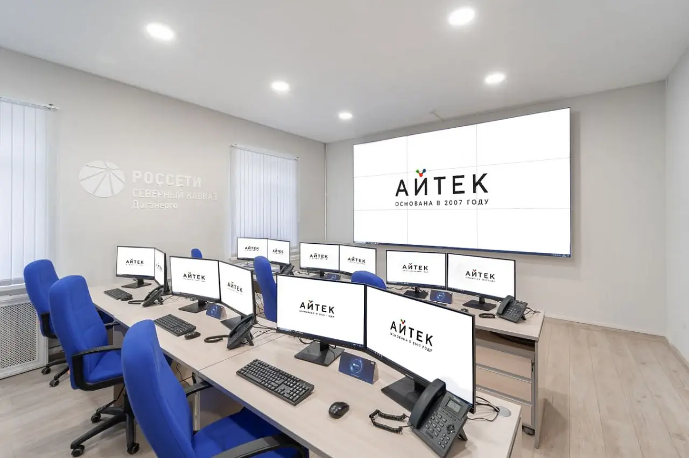
Россети Северный Кавказ Дагэнерго
от 4 500 000 ₽ с НДС 22%Состав оборудования
Видеостена 3 х 3 · Видеоконтроллер · Рабочие места для операторов · Сложная система коммутации · Система управления
Также входит в стоимость
Проектирование · Монтаж и пусконаладка
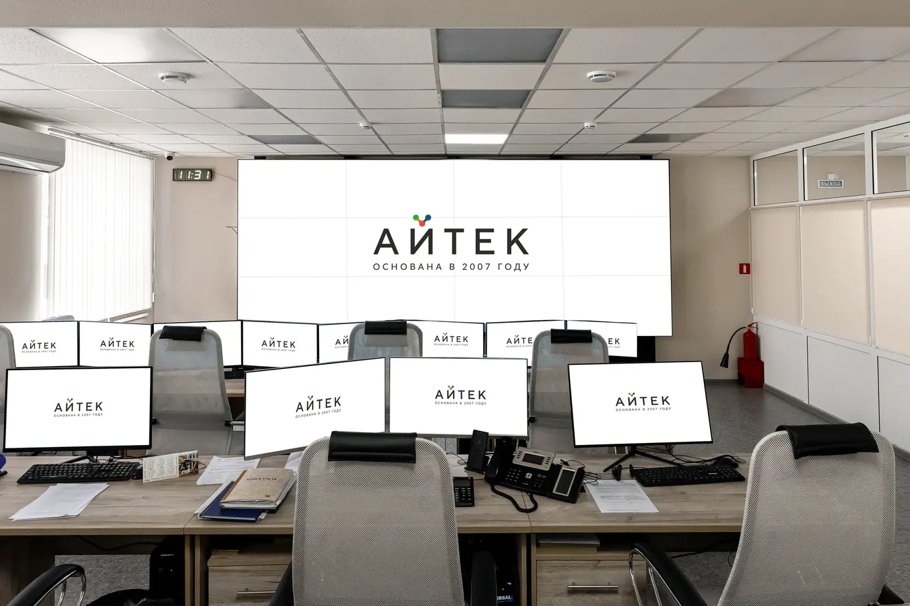
Подольский кабельный завод
от 6 500 000 ₽ с НДС 22%Состав оборудования
Видеостена 3 х 4 · Видеоконтроллер · Рабочие места для операторо · Профессиональная звуковая система · Система видеоконференцсвязи · PTZ камеры · Сложная система коммутации · Система управления
Также входит в стоимость
Проектирование · Монтаж и пусконаладка
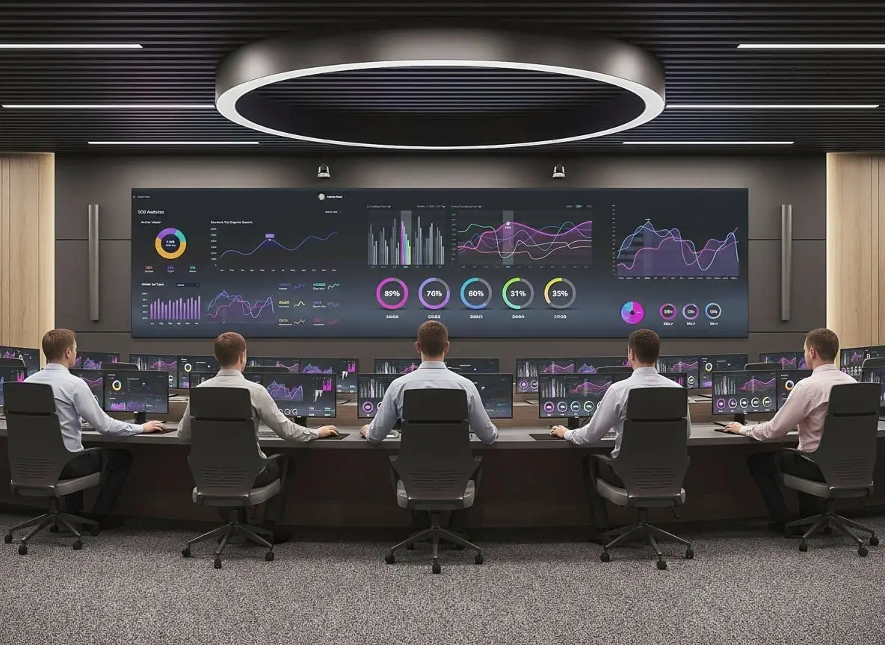
Диспетчерский зал – это основное помещение. Именно сюда, на большой экран стекается вся информация из разных источников для ее последующей обработки и принятия решений на ее основе. На большом экране визуализируется сплошной входящий поток, поступающий по разным каналам: трансляции с видеокамер, интерактивную карту, технические параметры процессов или измерений, технологическую схему и многое другое.
Выбрать формат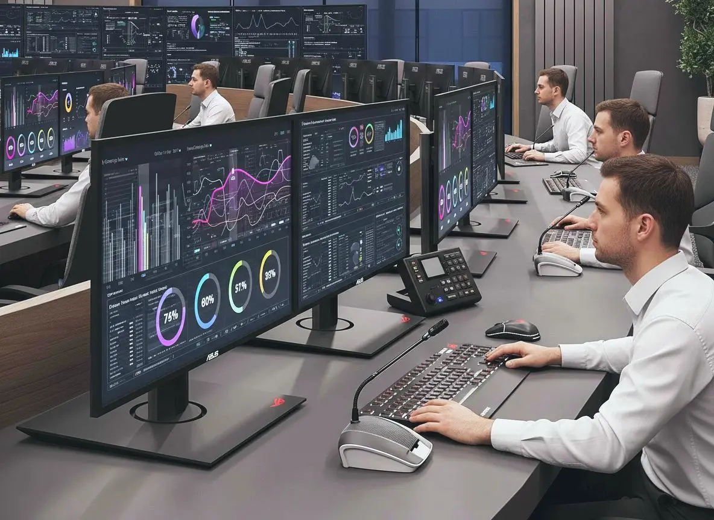
Оснащенное современными техническими средствами, обеспечивает оперативный контроль и управление текущей ситуацией. На мониторы выводится актуальная телеметрия, статистические данные и динамические модели развития событий. Интерактивная система визуализации позволяет не только мгновенно оценить общую обстановку, но и детализировать информацию — получить точные значения, графики и аналитику по каждому контролируемому параметру.
Выбрать формат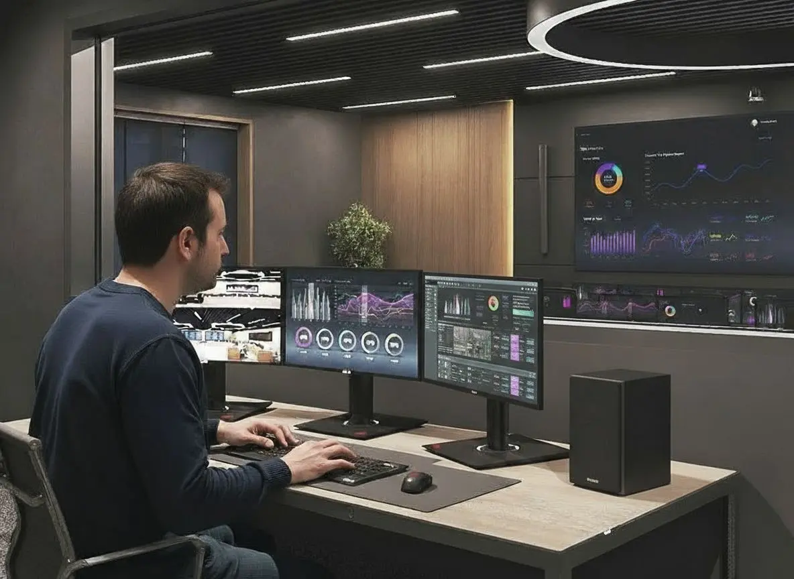
– это центральный узел управления и контроля, предназначенный для непрерывного мониторинга оперативной обстановки и координации действий. На таком месте размещаются многомониторные комплексы для визуализации данных, специализированные компьютеры с надежными системами связи, а также устройства ввода – клавиатуры, мыши и часто системы голосовой связи.
Выбрать формат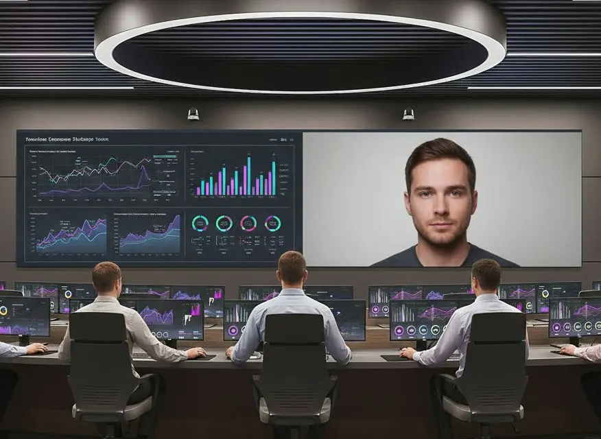
ВКС представляет собой современный вариант удаленной коммуникации посредством видеоизображения. Системы видеоконференцсвязи обеспечивают виртуальное общение множества человек в формате «каждый видит каждого». Это позволяет проводить оперативные совещания и принимать ситуативные решения даже без личного присутствия ответственных лиц.
Выбрать формат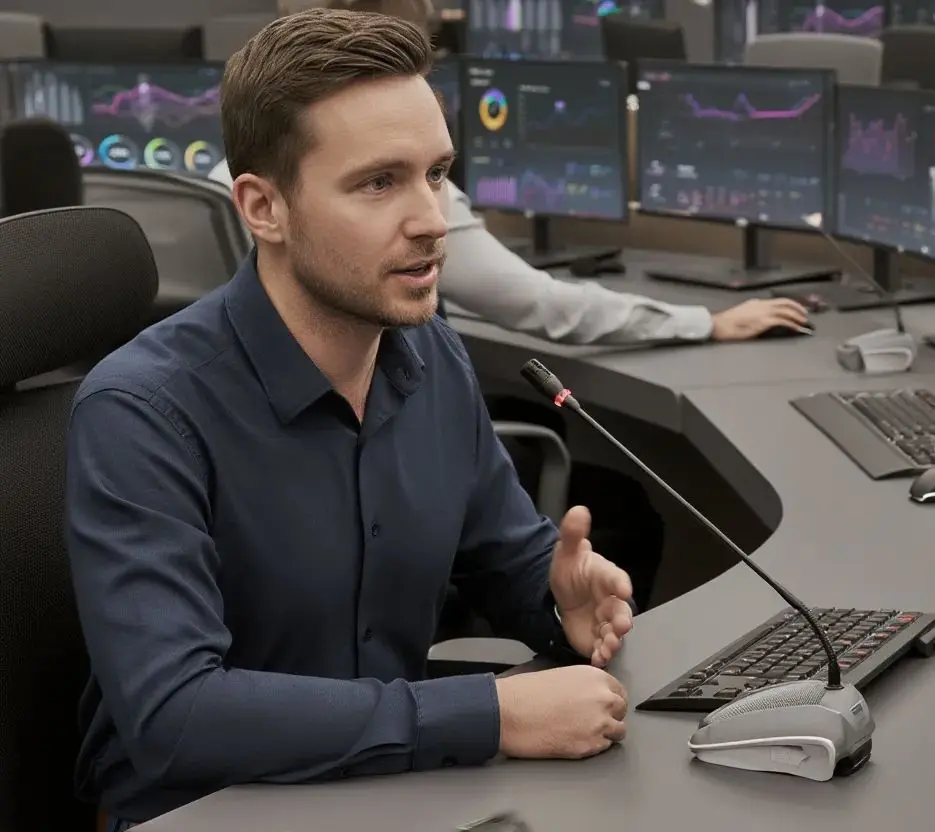
– это комплексы оборудования и программного обеспечения, предназначенные для организации группового аудио- и видеообщения. В таких системах используются центральные процессоры, микрофоны, акустические системы и устройства для интеграции с внешними линиями связи. К системам конференц-связи также относятся решения для записи и трансляции переговоров, а также системы управления и синхронизации.
Выбрать формат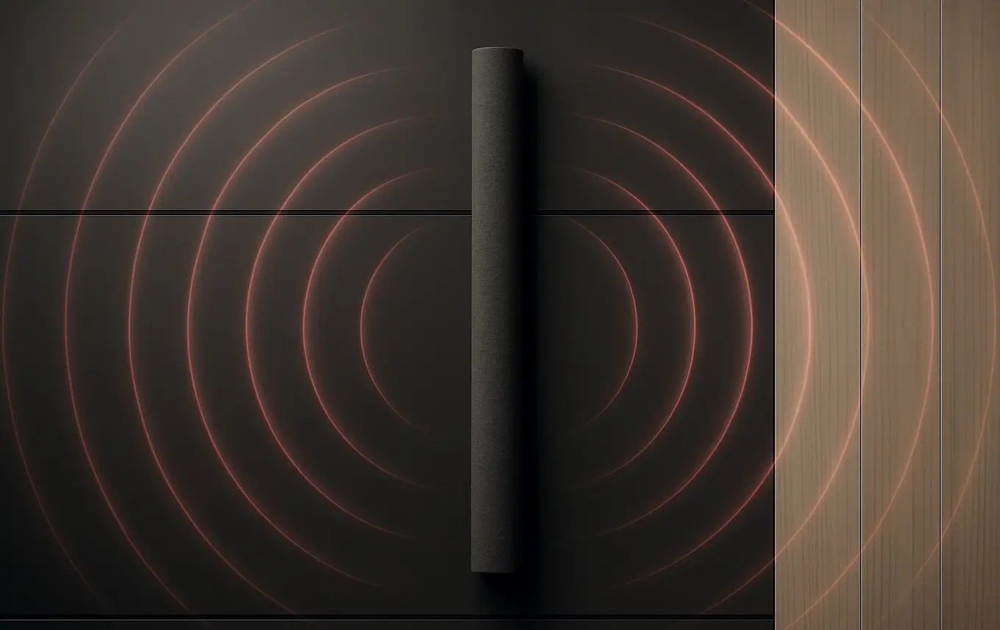
– это комплекс оборудования, предназначенный для передачи, усиления и воспроизведения аудиосигналов в различных условиях. В состав таких систем входят микрофоны, усилители мощности, акустические системы и устройства обработки звука. К звуковым системам также относятся системы озвучивания и оповещения, а также оборудование для конференц-связи и синхронного перевода.
Выбрать форматБюджеты и сроки взяты из карточек конкретных объектов.
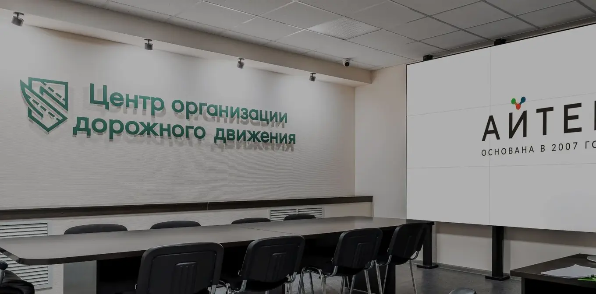
Саранск · 20 рабочих дней
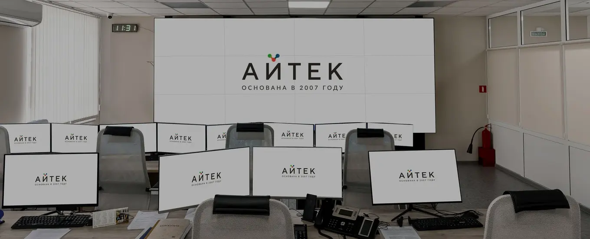
Подольск · 30 рабочих дней
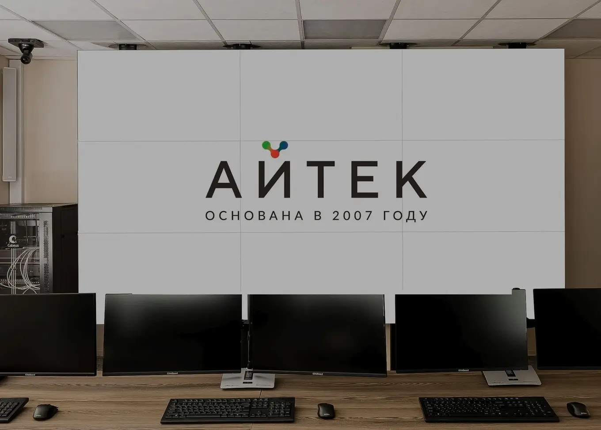
Москва · 60 рабочих дней

Подольск

Москва · 20 рабочих дней

Москва · 30 рабочих дней

Москва · 20 рабочих дней

Дагестан · 30 рабочих дней
Это громкоговорители, в которых излучатели в корпусе расположены вертикально в один ряд
Набор оборудования для обеспечения фонового звучания, устанавливаются в потолок
Полностью оборудованные места для операторов: диспетчерские столы, персональные компьютеры и мониторы с возможностью вывода изображения на главный экран
Комплекс оборудования для возможности проведения видеосеансов
Это когда можно выводить презентации или другие рабочие материалы на общий экран прямо со своего ноутбука или телефона, без проводов
Осуществляется при помощи интерактивного планшета. Для этого на нём создаётся интуитивно понятный пользовательский программный интерфейс, позволяющий управлять всеми основными функциями системы с помощью одной кнопки
Классические шторы, шторы блекаут с электроприводом и на управлении
Минимальная сумма проекта, за который мы берёмся — 500 000 ₽ Максимальная сумма проекта, который мы реализовали на данный момент — 150 000 000 ₽
На оборудование определяется производителя и осуществляется на основании гарантийных талонов и составляет - до 5 лет. На монтажные работы гарантия составляет - 1 год.
Заказ комплексной услуги у одного интегратора экономит время, деньги и нервы. Вы получаете единую точку ответственности, гарантию совместимости оборудования и качественного монтажа, а также профессиональную поддержку на всех этапах проекта.
Информация о вашей компании необходима для регистрации проектов у вендоров и получения специальных скидок. Профессиональные вендоры продают оборудование только сертифицированным компаниям, и для этого требуется предоставить данные о вашей организации.
Профессиональные мультимедийные решения предназначены для постоянной, бесперебойной работы в условиях повышенной нагрузки. Они отличаются от бытовых устройств повышенной надежностью, долговечностью, широкими возможностями настройки и управления, а также специальными функциями, необходимыми для решения бизнес-задач. Профессиональные решения имеют более длительную гарантию и обеспечивают более качественное изображение и звук.
Диспетчерская - это ключевое помещение для организаций, ответственных за безопасность и эффективное управление крупными процессами. Оснащенная средствами коммуникации различного вида, она предназначена для оценки ситуации в динамике и быстрого реагирования на изменения. Информация из различных источников собирается и представляется в удобном для анализа виде на большом экране для оперативного принятия управленческих решений.
Выберите задачу для помещения. Она появится в брифе вместе с названием решения.